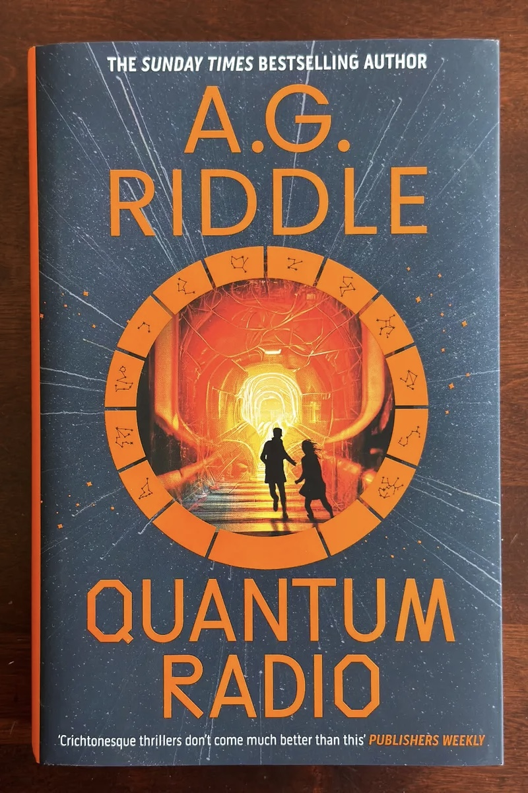
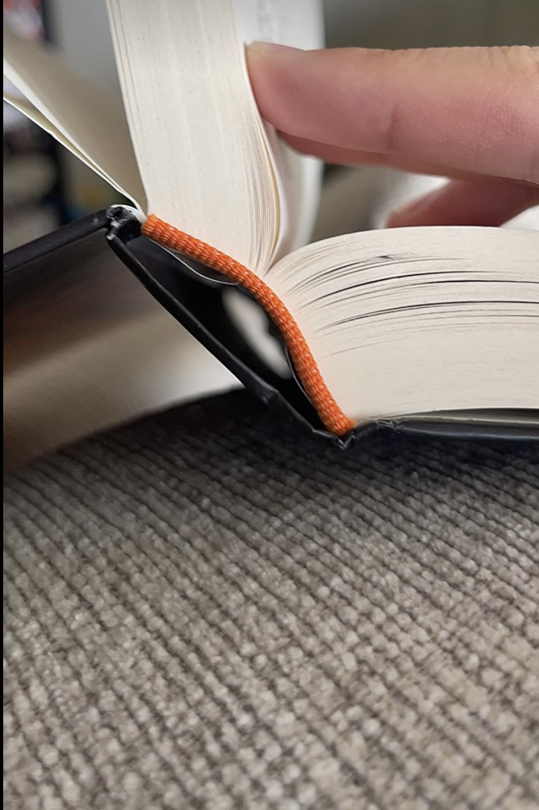
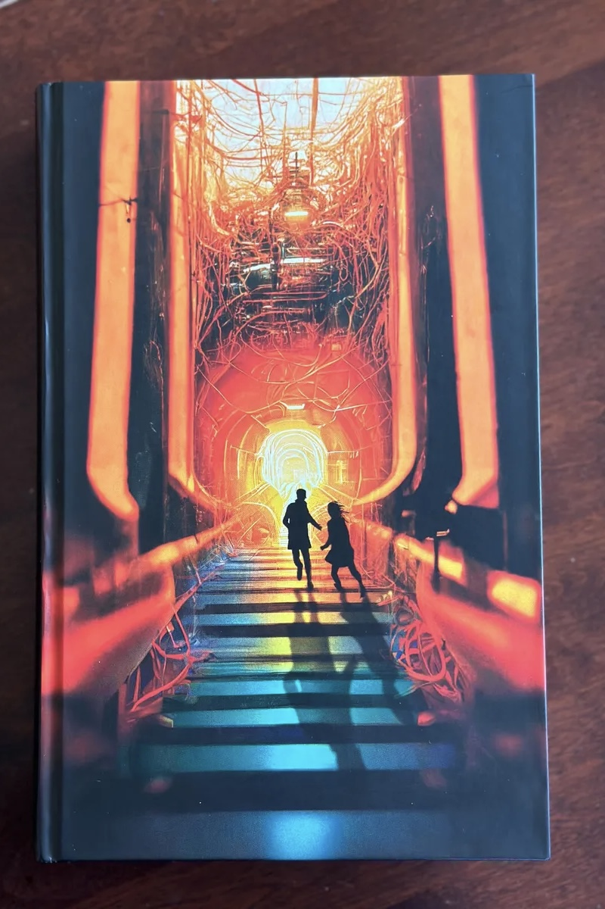

Quantum Radio
Dr. Tyson Klein is a quantum physicist who has dedicated his entire life to his research. At CERN, he analyses data generated by the Large Hadron Collider, the world's biggest and most powerful particle accelerator. Now, Ty believes he's found a pattern in its output. It looks like an organised data stream, being broadcast over what he calls a quantum radio.
Could it be a signal from another universe? A message sent from the future? Or something else entirely?